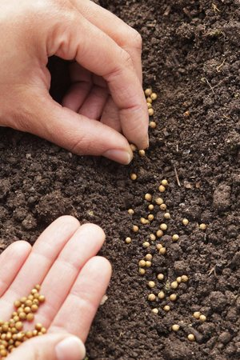

Our Seed Mission
Our Seed Mission focuses on sustainable urban agriculture, seed sharing libraries, and community planting initiatives. We empower local residents and student volunteers to grow their own sustainable food sources, reduce waste, and build robust neighborhood garden networks.